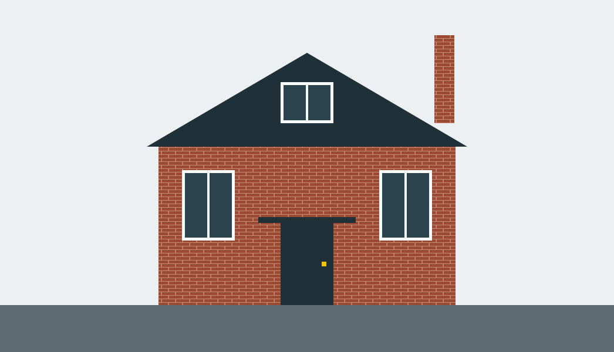
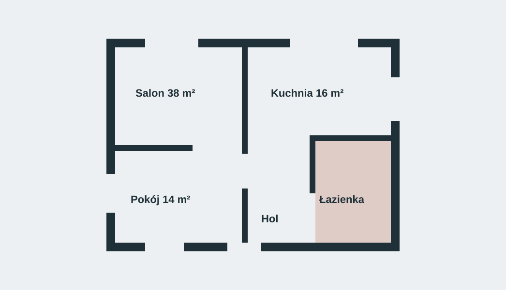
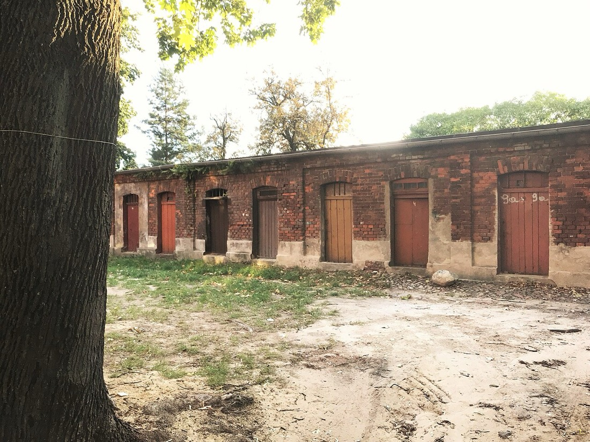
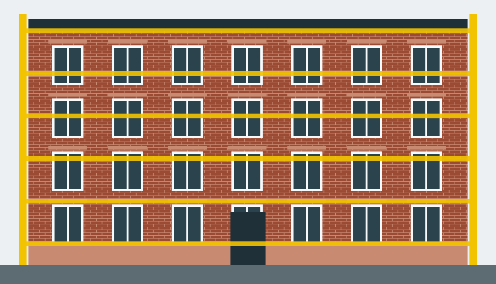
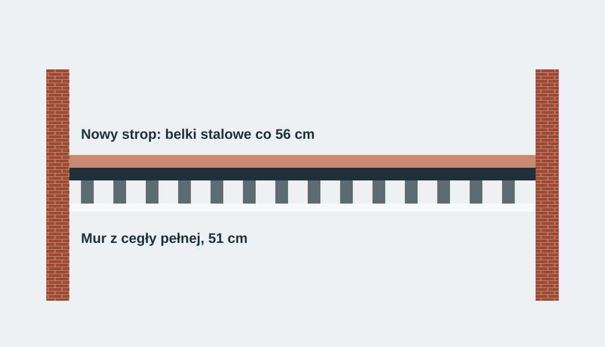
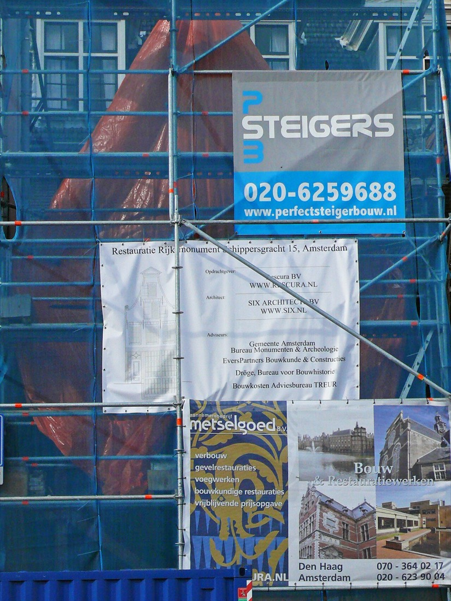
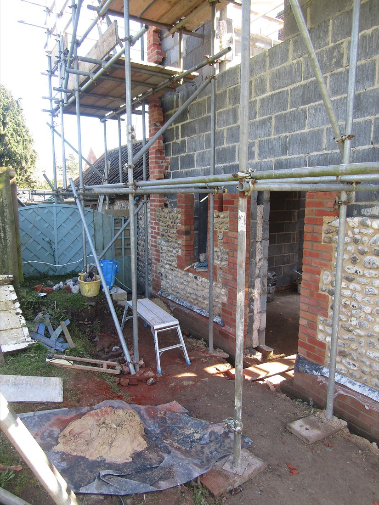
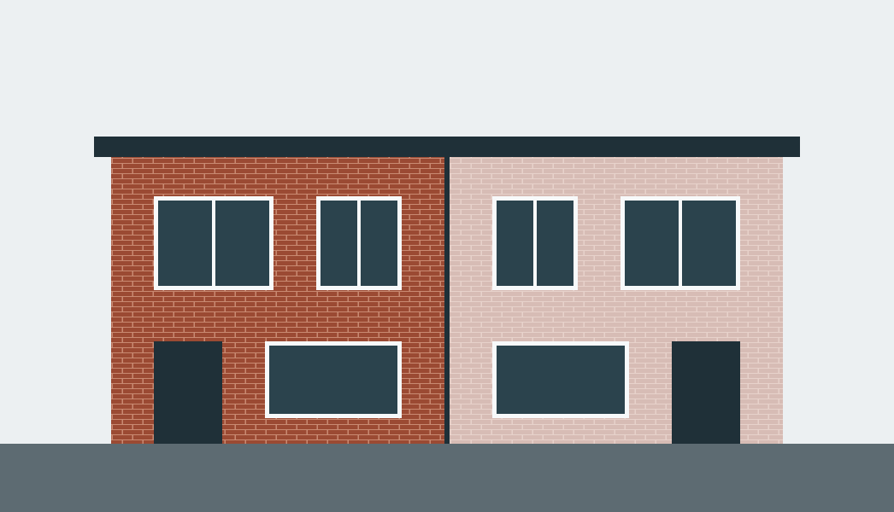
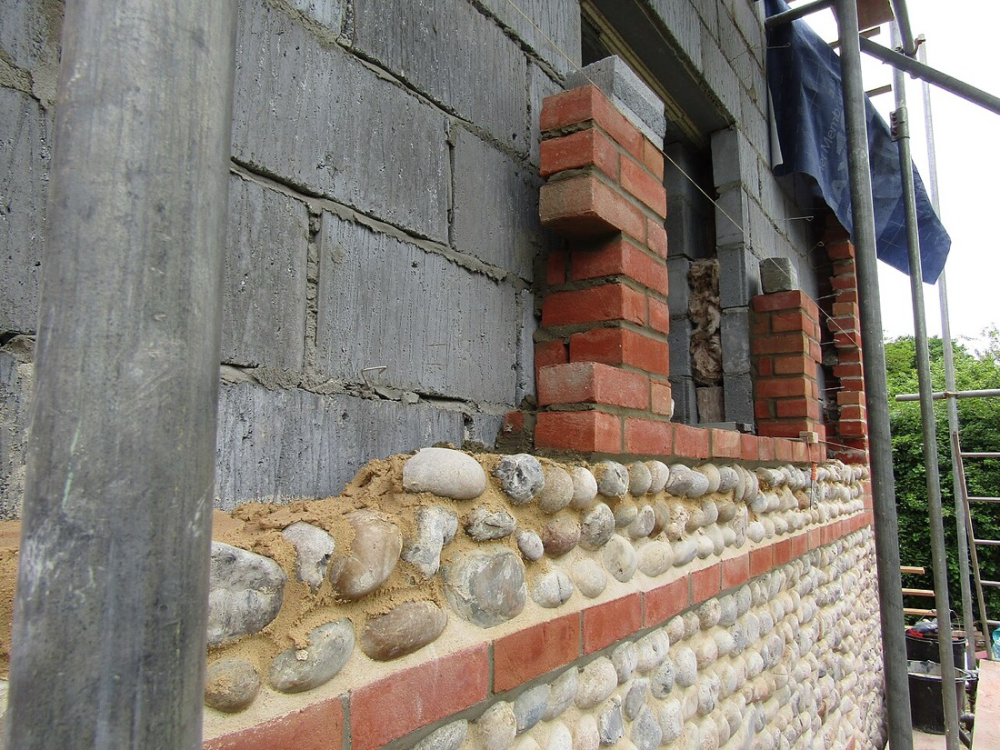

Dom z cegły, Nowosolna dom jednorodzinny, 142 m²Chcę podobny dom
Pod klucz, w 46 tygodni
2025
Kierownik: Paweł Wrona


Rodzinna firma budowlana od 1994 roku. Stawiamy domy i odnawiamy ceglane kamienice, najwyżej sześć budów naraz.

Pion założył w 1994 roku murarz Tadeusz Wrona. Dziś firmę prowadzą jego dzieci, Ewa i Paweł. Nazwa wzięła się od pionu, ciężarka na sznurku, którym murarz sprawdza, czy ściana stoi prosto. Pracujemy na najwyżej sześciu budowach jednocześnie, bo tylu mamy kierowników budowy, a każdy z nich jest na swojej budowie codziennie, nie raz w tygodniu. Gdy przychodzi siódme zlecenie, podajemy uczciwy termin rozpoczęcia, zamiast brać je i rozciągać pozostałe. W każdy piątek dostają Państwo zdjęcia z budowy i jedną stronę dziennika: co zrobiliśmy, co dalej i czy coś się przesuwa.


Dom z cegły, Nowosolna dom jednorodzinny, 142 m²Chcę podobny dom
Pod klucz, w 46 tygodni
2025
Kierownik: Paweł Wrona




Kamienica, ul. Wschodnia elewacja, stropy, dachZapytaj o remont kamienicy
Z konserwatorem zabytków
2024
Kierowniczka: Ewa Wrona



Bliźniak, Łagiewniki dwa domy po 118 m²Zapytaj o bliźniak
Stan deweloperski, 38 tygodni
2023
Kierownik: Marcin Sobczak
W budowie, sześć z sześciu
Wolne terminy rozpoczęcia
Zakończone w 2026

Przyjeżdżamy na działkę albo do kamienicy, z projektem w ręku. Patrzymy na grunt, dojazd i sąsiadów. Bezpłatnie.
Każda pozycja osobno: ilość, cena materiału, robocizna. Robocizna jest w umowie stała do końca budowy.
Ława, ściany fundamentowe, izolacja. Kierownik wpisuje do dziennika każdy odbiór zbrojenia przed betonowaniem.

Murujemy z cegły pełnej albo z ceramiki. Co piątek zdjęcia z tych samych czterech miejsc, więc widać, ile przybyło.

Gdy stoi więźba dachowa, na jej szczycie zawieszamy wiechę. Inwestor przychodzi, ekipa dostaje obiad, tak jak w 1994.
Budynek zamknięty przed zimą. W środku elektryk i hydraulik, dwie firmy, z którymi pracujemy od lat.

Przy odbiorze sprawdzamy pionem każdy narożnik i ościeże. Dopiero wtedy podpisujemy protokół i oddajemy klucze.
Cena za metr |
Stan surowy2 900 złza m², netto | Deweloperski4 600 złza m², netto | Pod klucz6 200 złza m², netto |
|---|---|---|---|
| Fundamenty, ściany, stropy | Tak | Tak | Tak |
| Dach z pokryciem | Tak | Tak | Tak |
| Okna i drzwi zewnętrzne | Nie | Tak | Tak |
| Instalacje i ogrzewanie | Nie | Tak, z pompą ciepła | Tak, z pompą ciepła |
| Tynki, wylewki, elewacja | Nie | Tak | Tak |
| Podłogi, łazienki, drzwi | Nie | Nie | Tak, z projektantką |
| Dom 140 m² trwa | 21 tygodni | 34 tygodnie | 46 tygodni |
| Gwarancja | 5 lat | 5 lat, 3 na instalacje | 5 lat, 3 na wykończenie |
| Zapytaj | Zapytaj o stan surowy | Zapytaj o deweloperski | Zapytaj o pod klucz |
Stan surowy 2 900 zł za m²
Deweloperski 4 600 zł za m²
Pod klucz 6 200 zł za m²
Na każdej budowie wisi żółta tablica informacyjna. Ustaw metraż i standard, a wypiszemy Twoją.
Tablica informacyjna
Czy budujecie poza Łodzią? Tak, do około 40 km od miasta: Zgierz, Pabianice, Brzeziny, Stryków, Andrespol, Nowosolna. Dalej nie, bo kierownik musi być na budowie codziennie.
Czy muszę mieć projekt? Tak, budujemy według projektu z pozwoleniem albo zgłoszeniem. Jeśli go jeszcze nie ma, pomożemy wybrać gotowy projekt i zlecić adaptację.
Ile kosztują oględziny? Nic. Przyjeżdżamy w ciągu tygodnia od telefonu, oglądamy działkę lub budynek i rozmawiamy o terminie.
Jak długo czeka się na kosztorys? Dwa tygodnie od oględzin i otrzymania projektu. Kosztorys jest szczegółowy, pozycja po pozycji.
Czy cena może się zmienić? Robocizna jest stała do końca budowy. Materiały rozliczamy według faktur, a jeśli zdrożeją o więcej niż 6%, pytamy o zgodę przed zakupem.
Jak wyglądają płatności? W pięciu transzach, zawsze po zakończonym etapie i odbiorze. Nigdy nie bierzemy pieniędzy z góry za całość.
Kto pracuje na budowie? Kierownik budowy z uprawnieniami i stała ekipa od czterech do siedmiu osób. Ścian i dachów nie oddajemy podwykonawcom.
Co jest w piątkowym raporcie? Zdjęcia z tych samych czterech miejsc, strona dziennika budowy i plan na następny tydzień. Przychodzi mailem do 16:00.
Czy budujecie zimą? Murujemy do około minus pięciu stopni. W mrozy pracujemy w środku zamkniętego budynku, a terminy ustalamy z myślą o zimie od początku.
Czy remontujecie kamienice pod ochroną konserwatora? Tak, to prawie połowa naszych zleceń. Uzgadniamy prace z konserwatorem, a brakującą cegłę dobieramy z rozbiórek.
Jaka jest gwarancja? Pięć lat na konstrukcję i dach, trzy lata na instalacje i wykończenie. Usterki zgłoszone w gwarancji naprawiamy w ciągu dwóch tygodni.
Co to jest wiecha? Wieniec albo gałązka na szczycie więźby dachowej. Stary murarski zwyczaj na znak, że dom ma już dach. U nas zawsze z obiadem dla ekipy.
Piszą do nas osoby z działką, z projektem domu albo z kamienicą, która potrzebuje nowego dachu.
Gdzie jest Twoja działka?
biuro@pionbudowa.pl 42 630 19 94ul. Tymienieckiego 9, Łódź. Odpisujemy w ciągu dwóch dni roboczych.